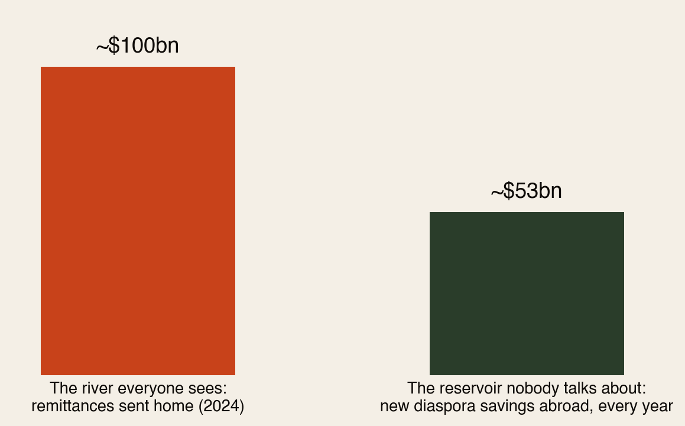
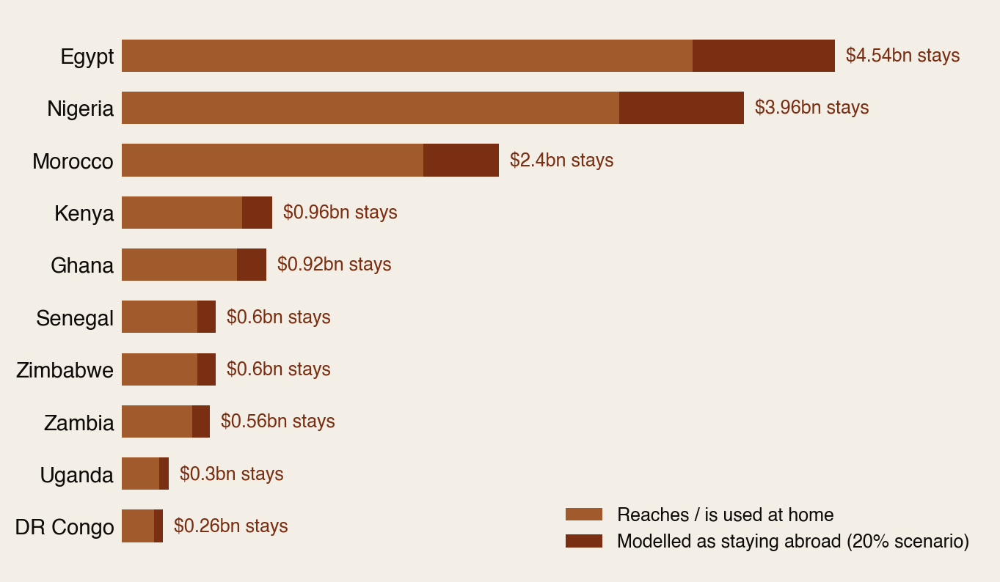
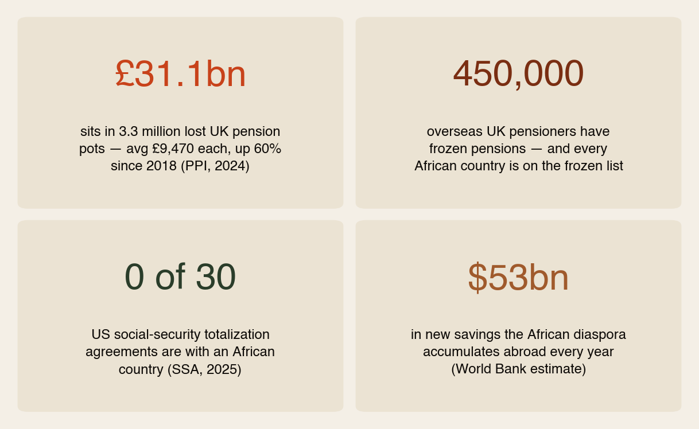
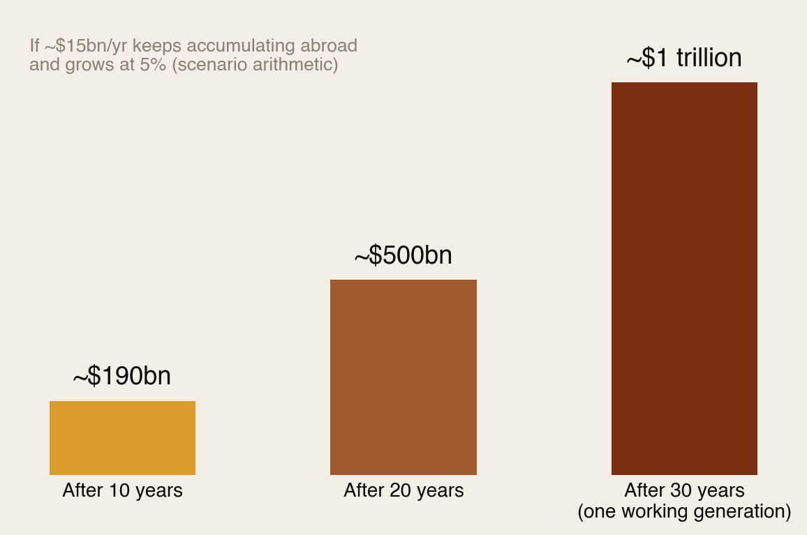

The wealth we leave behind.
Everyone talks about the money the diaspora sends home. Almost nobody talks about the money that never makes the trip: the pensions, savings and property Africans abroad build over a working life — and what happens to it at retirement, or at death. The systems for bringing it home barely exist. This report is about that missing bridge.
Section 01The Short Version
A life abroad builds two piles of money. One gets sent home — you know it as remittances. The other stays where you live: the workplace pension, the retirement account, the savings, the house, the insurance policy.
This report is about the second pile — and four numbers explain why it matters:
- ~$53 billion — what the African diaspora saves abroad every year (World Bank estimate). That’s a second river, half the size of remittances, that almost never gets discussed.
- £31.1 billion — what already sits in 3.3 million lost UK pension pots. Average pot: £9,470. Mobile workers — and migrants change jobs and countries more than anyone — are exactly who loses track.
- 0 out of 30 — the number of US social-security agreements signed with African countries. Zero.
- 450,000 — overseas UK pensioners whose state pension is frozen. Every African country is on the frozen list: retire back home and your pension never rises again.
The diaspora spends decades building wealth abroad. The question nobody plans for: does that wealth ever make it home — or does it quietly become someone else’s unclaimed property?
Section 02The River and the Reservoir

Remittances get summits, apps and headlines. But while ~$100bn flows home each year, the diaspora is also adding roughly $53bn a year to savings held abroad — in pension funds, bank accounts and property in London, Paris, Houston and Toronto.
That reservoir is not a problem by itself — building wealth where you live is smart. The problem is what happens to it at the two exits: retirement and death. That’s where the bridge home is missing.
Section 03What Stays Behind: The Scenario
Nobody keeps official statistics on migrant wealth left abroad after retirement or death — that gap is itself part of the story. So the source analysis we verified for this report does something honest instead: it models a transparent scenario. Take the top-10 remittance corridors (~$75.5bn in 2024, figures verified) and ask: what if wealth equivalent to just 20% of each corridor’s annual flow ends up permanently stranded abroad?

Under that scenario, ~$15 billion a year of diaspora-linked wealth stays behind — $4.5bn for Egypt’s diaspora alone, $4bn for Nigeria’s. And note: the World Bank’s $53bn annual savings estimate suggests this 20% scenario is, if anything, conservative.
Section 04The Machinery of Forgetting
“Stranded wealth” sounds abstract until you see how ordinary it is. These four facts are all verified, and none of them is diaspora folklore:

Walk through a typical diaspora career and you can see how wealth gets stranded, step by step:
- You change jobs — and each job leaves a small pension pot behind. The UK alone has 3.3 million pots that owners have lost track of. Change countries and the odds of losing track multiply.
- You retire home — and if it’s a UK state pension, it freezes the day you land in Accra or Nairobi, losing value to inflation every year for the rest of your life. The same pension would keep rising in Philadelphia or Paris.
- Your work across borders doesn’t add up — with no totalization agreements, years contributed in the US and years contributed at home never combine toward one pension. Some contributions simply produce nothing.
- You pass away — and any account, policy or pot your family doesn’t know about enters the host country’s unclaimed-property system. Estates without a will are settled by foreign intestacy rules, with heirs a continent away and no paper trail.
None of this machinery was designed to take diaspora wealth. It simply wasn’t designed to give it back.
Section 05A Trillion in a Generation
Run the scenario forward. If ~$15bn a year keeps accumulating abroad and grows at an ordinary 5%:

Within one working generation, the scenario builds to roughly a trillion dollars — a sovereign wealth fund the diaspora already owns, parked permanently in other people’s economies. For comparison: that is ten times Africa’s record annual remittance flow, sitting still.
Treat the exact number lightly — it’s arithmetic on a scenario. But the direction is the point: stranded wealth compounds too. Every year the bridge home doesn’t exist, the pile on the far side gets bigger.
Section 06Why the Wealth Stays
- The system penalises going home. A frozen UK pension is a lifelong pay cut for choosing Kampala over Calgary (Canada is frozen too — but the point stands: Africa is entirely on the wrong list).
- Contributions don’t travel. Zero US–Africa totalization agreements means split careers produce split, shrunken pensions — or none.
- Nothing pulls from the other side. As World Bank and UNCDF work puts it: diaspora wealth stays in host countries unless origin-country financial products actively pull it home. Diaspora bonds, pensions you can port, mortgages you can service from abroad — these mostly don’t exist yet at scale.
- Death finds families unprepared. Cross-border estates need wills valid in two legal systems and family members who know what exists, where. Most diaspora households have neither.
Section 07What Would Pull It Home
The policy toolkit is known — what’s missing is execution at scale:
- Diaspora bonds that let a nurse in London hold Lagos or Nairobi infrastructure in her ISA.
- Pension portability agreements — the single highest-leverage ask African governments could put on the table with the US, UK and EU. The precedent exists; Africa is simply not party to it.
- Migrant savings and retirement products designed for irregular income and dual-country lives.
- Diaspora mortgages that convert decades of foreign savings into a home-country asset before retirement, not after.
- Insurance and collective investment schemes that make the home country the default beneficiary infrastructure, not an afterthought.
And one for AGF’s own community: the unclaimed-wealth conversation should be a diaspora institution — the way harambee is for weddings. Families talk about what’s sent. They almost never talk about what’s stored.
Section 08Your Personal Checklist (Do This This Month)
- Hunt your lost pots. UK: the free government Pension Tracing Service. US: your old 401(k)s via previous employers or the Department of Labor’s new lost-and-found database. One evening of admin, often thousands recovered.
- Consolidate as you go. Every job change, roll the pot forward. Wealth you can see is wealth that comes home.
- Name your beneficiaries — on everything. Pensions, life insurance and retirement accounts pass by beneficiary form, not by will. Check they name who you think they do.
- Write a will that covers both countries — or two coordinated wills. Foreign intestacy rules should never be your estate plan.
- Make a wealth map. One document — every account, pension, policy and property, in both countries — and make sure one trusted person knows where it is. This single page is the difference between inheritance and unclaimed property.
- Check the frozen-pension math before you choose where to retire. It won’t always change the answer — but it should always be in the calculation.
You spent thirty years building it. Spend one evening making sure it knows the way home.
Section 09How We Checked
- Verified: the 2024 top-10 remittance figures (World Bank-linked, verified in our earlier research); £31.1bn / 3.3m lost UK pension pots (Pensions Policy Institute, 2024); ~450,000 frozen overseas UK pensions with all African countries unfrozen-list-excluded (House of Commons Library); 30 US totalization agreements, none African (US Social Security Administration); ~$53bn annual African diaspora savings (World Bank).
- Labelled as a scenario: the 20% retained-abroad factor and everything built on it ($15.1bn/yr; the trillion-in-a-generation projection). No official cross-country data measures migrant wealth left abroad — the source analysis is a transparent sizing exercise, and we present it as exactly that.
- Added by AGF: the verified “machinery of forgetting” evidence, the river-vs-reservoir framing, the compounding projection, the policy prioritisation (pension portability as the highest-leverage ask), and the personal checklist.
Sources: World Bank / Business Insider Africa (2024 remittance ranking); World Bank “Harnessing the Diaspora’s Resources”; UNCDF migrant-savings research; Pensions Policy Institute via Pensions UK (2024); House of Commons Library frozen-pensions briefing; US SSA international agreements; source analysis “African Diaspora Wealth Left Abroad” (2026). Full detail in the PDF edition.
The diaspora helps the diaspora.
Africa Global Forum is a peer network for Africans abroad — help each other, sit together, and bounce ideas. The research above is part of an open library. The Forum itself is by application.